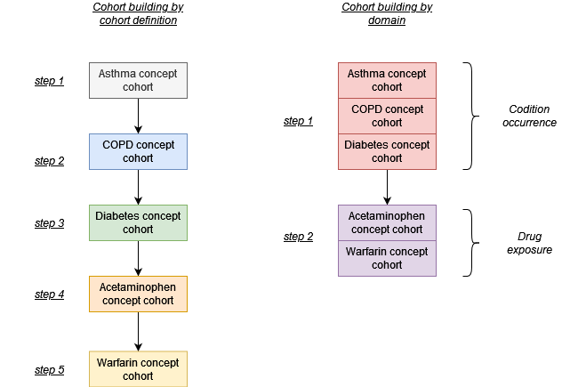
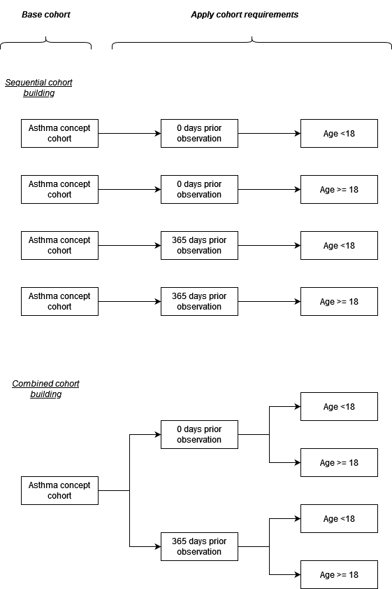
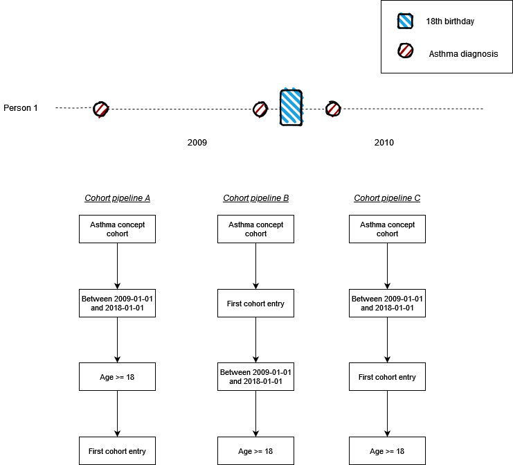

Introduction
The CohortConstructor package is designed to support cohort building pipelines. When using the package the general workflow is to first build a set of base cohorts and then subsequently apply inclusion criteria to derive the final study cohorts of interest. Base cohorts are built by domain (rather than by cohort definition) and from one base cohort many study cohorts can be derived.
Building a cohort set by domain/ clinical table
Let´s say we want to build 5 cohorts with 3 (asthma, copd, and diabetes) defined based on concepts seen in the condition occurrence table while the other 2 (acetaminophen and warfarin) are based on concepts recorded in the drug exposure table. We can build these cohorts independently, one after the other. However, this approach will mean repeating 3 joins to the condition occurrence tables and 2 joins to the drug exposure table (with the concepts in the concept sets). To make this less computationally expensive, we could instead create the cohorts by domain. In this case we will instead make one join with the condition occurrence table and one to the drug exposure (using all the concept sets together).

Deriving study cohorts from base cohorts
When making study cohorts we often have a concept sets to define a clinical event along with various study-specific inclusion criteria, for example criteria around an amount of prior observation and age. Often we may have sensitivity analysis where the concept set remains the same but these inclusion criteria change. In such situations we can make cohorts one-by-one. However, this can lead to duplication as we can see in the example below we identify asthma records multiple times. An alternative approach is to build a base cohort, in this case based on asthma records, after which we derive multiple cohorts from this where the different inclusion criteria are each applied.

Considerations when building cohorts
CohortConstructor provides a means of building cohorts via a pipeline, with cohorts created through the application of a sequence of functions. It is important to note that the order of the sequence will often have important implications. In the example below we have just one individual who has three recorded diagnoses of asthma. One diagnosis was in 2008 and two in 2009, with only the last coming after the individual´s 18th birthday. Below three cohort pipelines are shown with restrictions around calendar dates, age, and that the record was the first. Only in cohort pipeline A, however, would the individual be included in the final cohort, with their third diagnosis used for cohort start. In pipeline B and C the individual would have been excluded.
